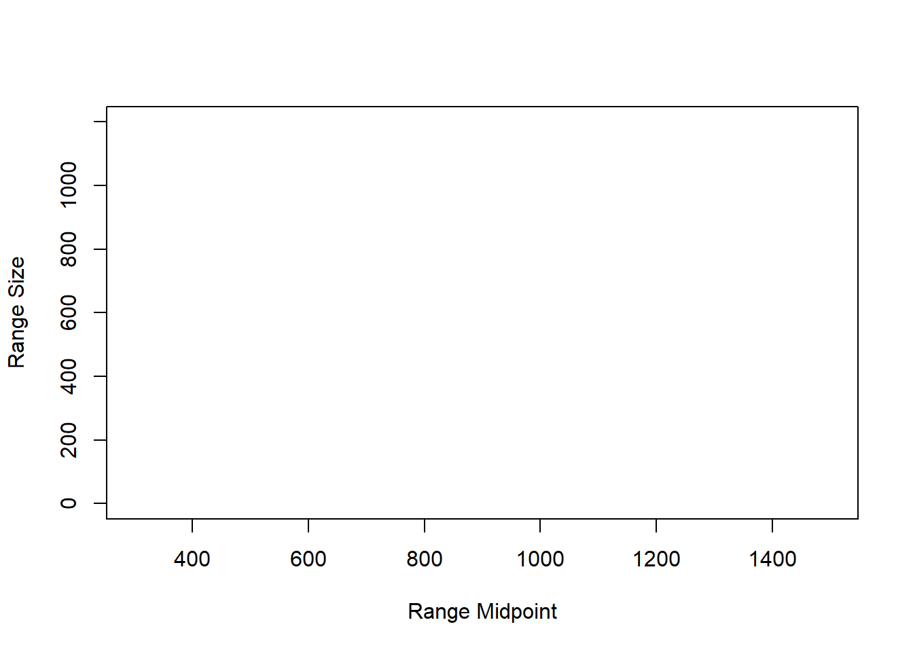
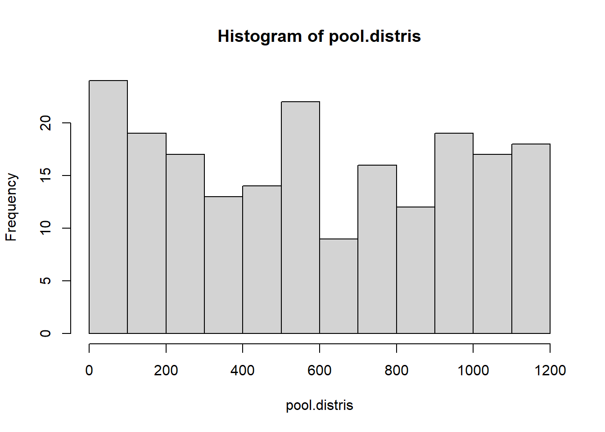
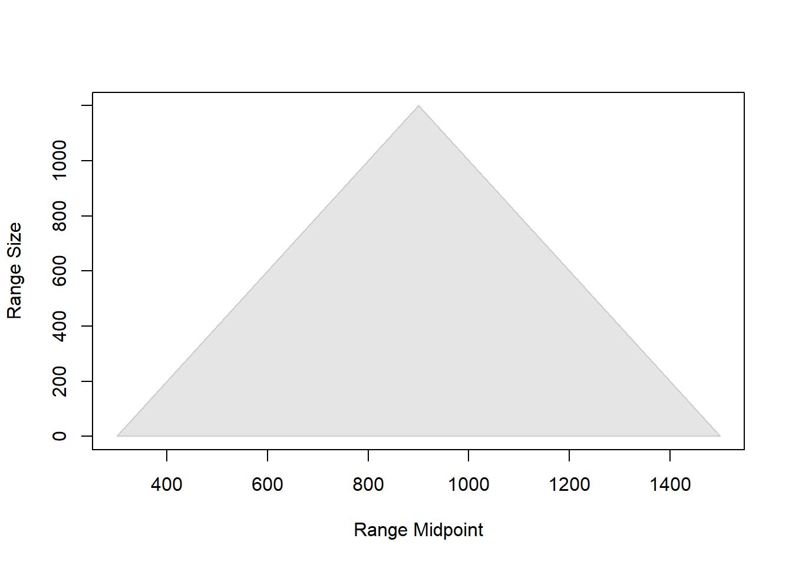

![]()
min.elev <- 300
max.elev <- 1500
domain <- c(min.elev, max.elev)
plot(domain, c(0, domain[2]-domain[1]),
ylab="Range Size", xlab="Range Midpoint", type="n")
pool.distris <-runif(200, 0, domain[2]-domain[1])
hist(pool.distris)
plot(domain, c(0,domain[2]-domain[1]), type="n",
ylab="Range Size", xlab="Range Midpoint")
polygon(x=c(domain[1], domain[1]+(domain[2]-domain[1])/2, domain[2]),
y=c(0, domain[2]-domain[1], 0), col="grey90", border="grey80")